La inspiración para presentar este proyecto en formato web surgió de mi deseo latente de explorar el mundo de la creación web.
Durante mucho tiempo, había intentado sumergirme en el desarrollo de páginas, pero la falta de motivación y la ausencia de un
propósito definido obstaculizaban mis esfuerzos. Fue entonces cuando este emocionante proyecto en 3D, que nos fue asignado como
parte del trabajo de tecnología en primer año de bachillerato, se presentó como la oportunidad perfecta para fusionar mis
habilidades en desarrollo web con mi pasión por la tecnología espacial.
La idea de modelar una lanzadera espacial en 3D no solo capturó mi interés, sino que también se convirtió en el catalizador que me
impulsó a llevar a cabo mi anhelado proyecto web. La complejidad y el desafío inherentes a la representación tridimensional de una
lanzadera espacial no solo me proporcionaron un objetivo claro y específico, sino que también me brindaron la oportunidad de
fusionar mis dos pasiones de una manera única y significativa.
Así, este proyecto no solo se convierte en una presentación del trabajo de tecnología, sino también en una manifestación de mi
crecimiento personal y mi capacidad para enfrentar y superar desafíos. La creación de esta web no solo representa la culminación de
habilidades técnicas, sino también la materialización de una motivación renovada y un propósito definido, que en última instancia,
dio vida a esta presentación única e interactiva. Espero que esta combinación de tecnología y creatividad logre transmitir de manera
efectiva mi dedicación y entusiasmo por este proyecto, proporcionando una experiencia visualmente atractiva e informativa para el
disfrute de todos.
1 / 19
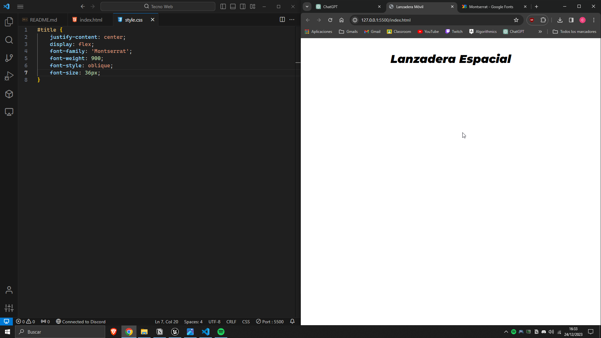
La primera imagen del desarrollo.
2 / 19

La segunda imagen del desarrollo.
3 / 19
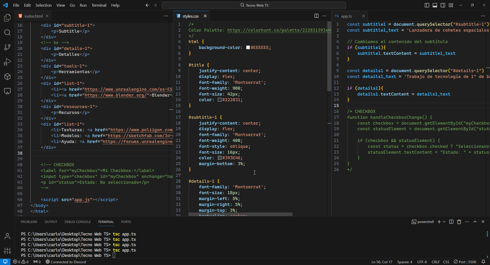
La tercera imagen del desarrollo.
4 / 19
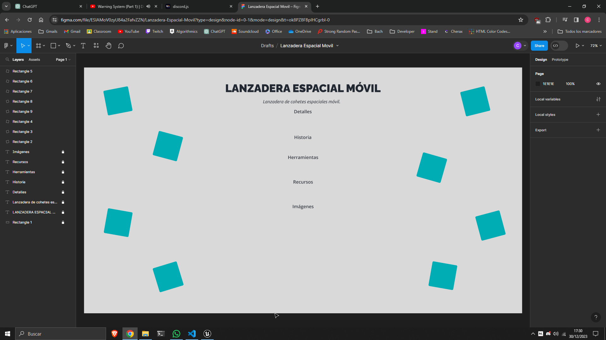
Boceto de la web.
5 / 19

La planificacións del proyecto.
6 / 19
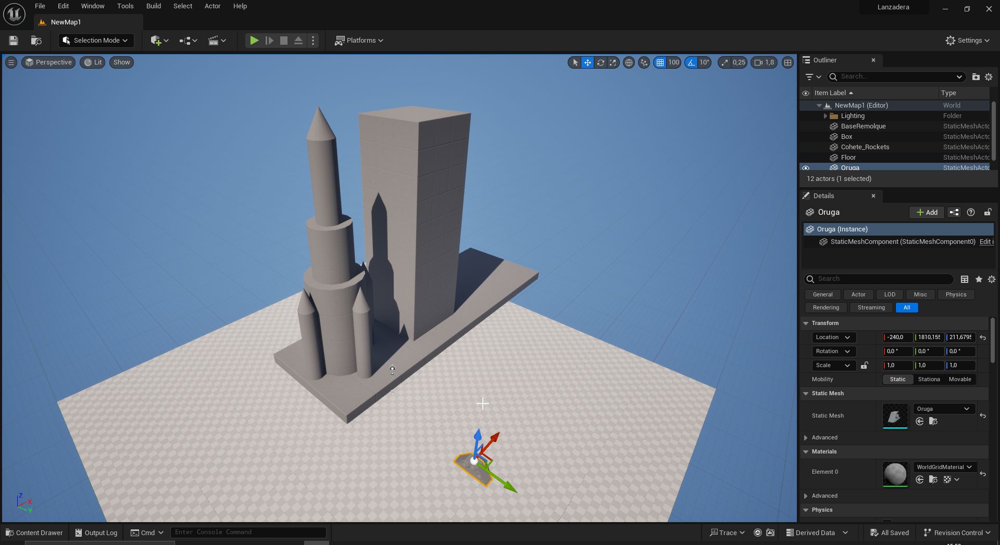
La primera versión del modelado.
7 / 19
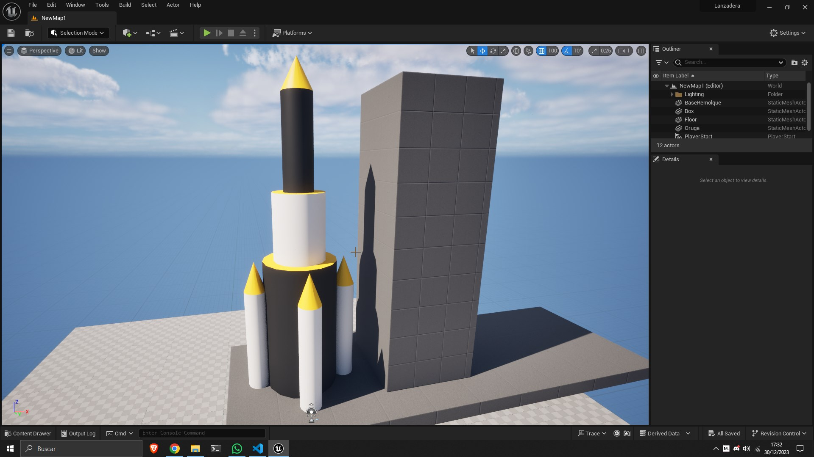
La segunda versión del modelado.
8 / 19
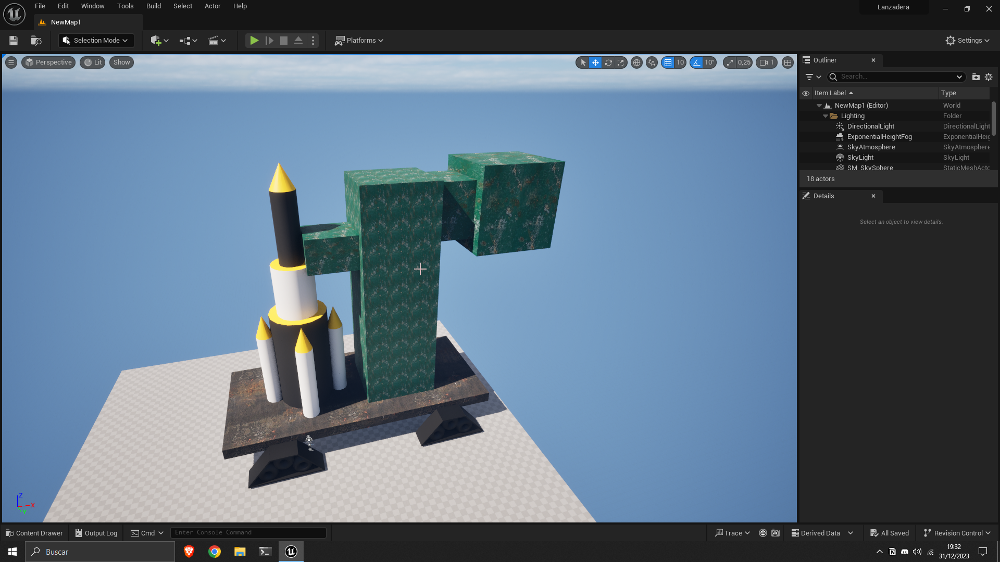
La tercera versión del modelado.
9 / 19
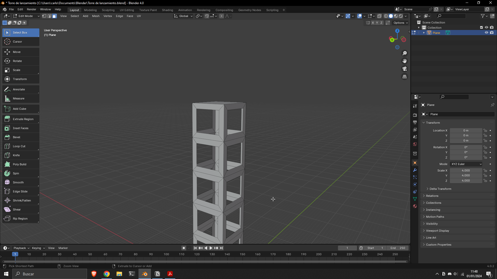
Primer intento de modelar la torre en Blender.
10 / 19
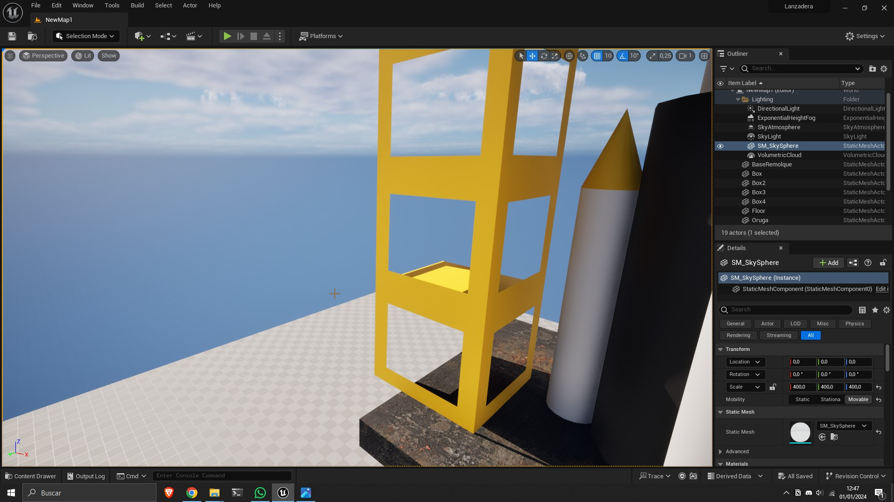
La cuarta versión del modelado.
11 / 19
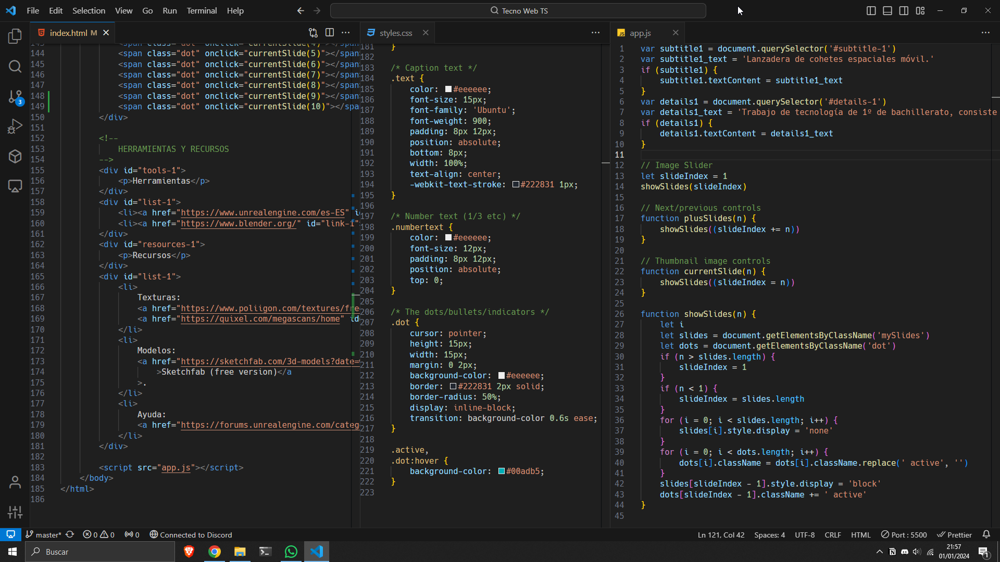
La quinta imagen del desarrollo.
12 / 19
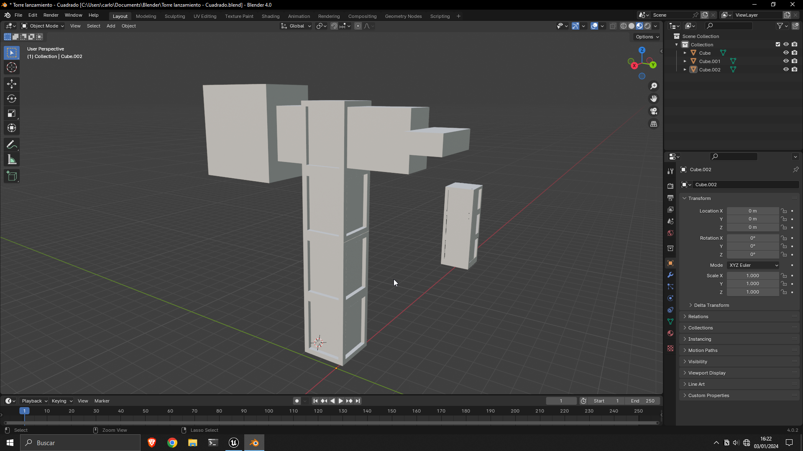
Segundo intento del modelaje de la torre.
13 / 19
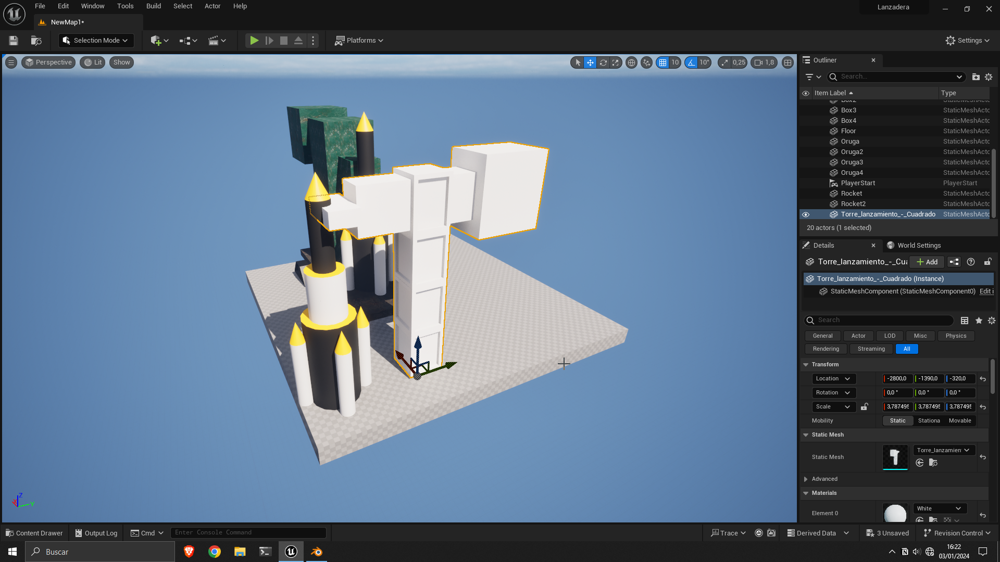
Primera versión de la torre de Blender.
14 / 19
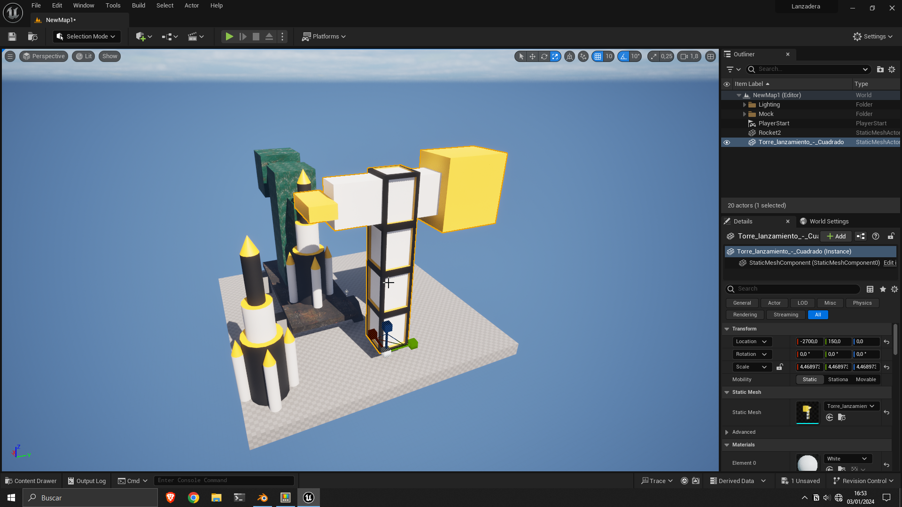
Primera versión de los materiales de la torre.
15 / 19
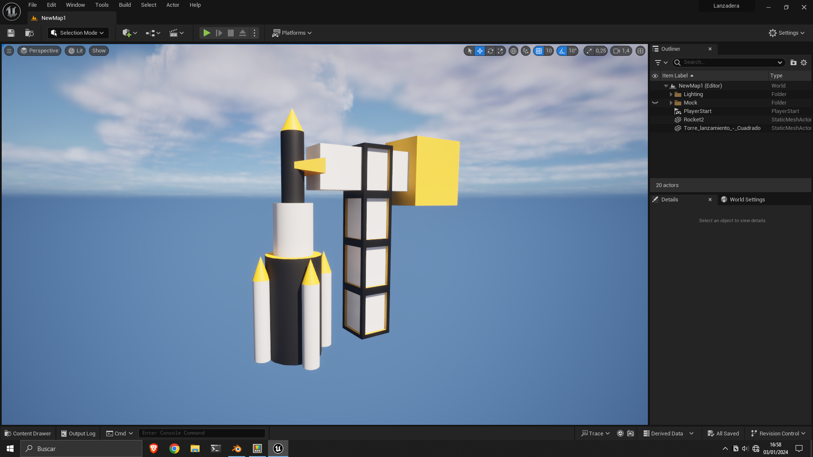
Versión final de los materiales y de la torre.
16 / 19
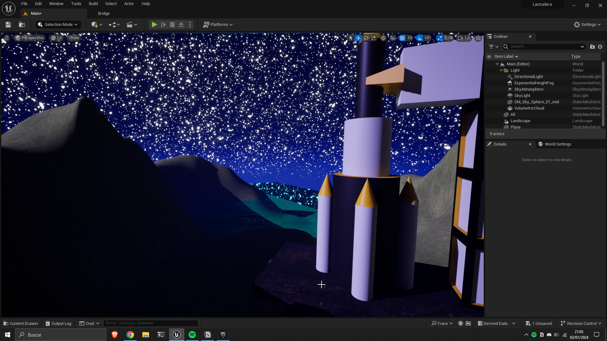
Primera versión del diseño de entorno.
17 / 19
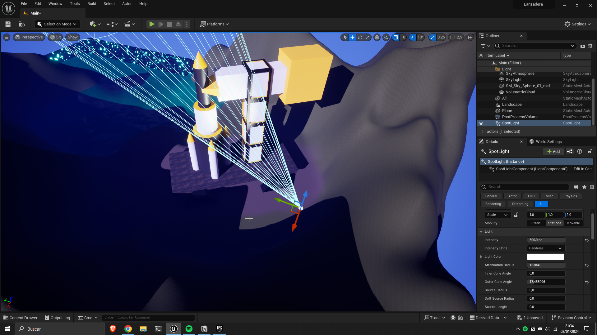
Añadiendo luces a la primera versión.
18 / 19
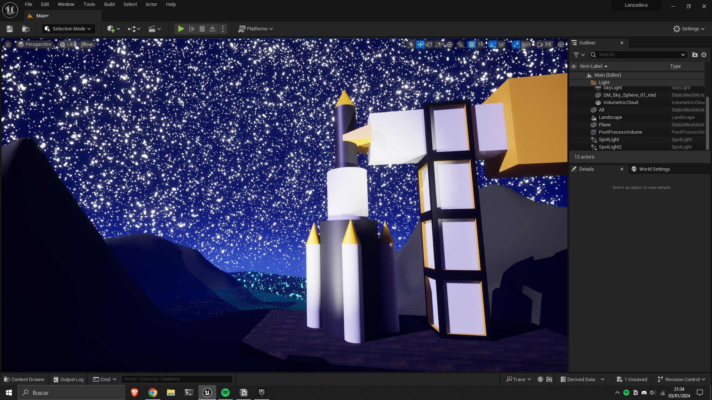
Segunda versión del entorno.
19 / 19
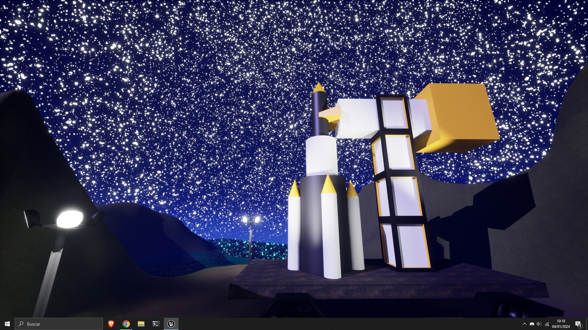
Versión final del proyecto.
⏪
⏩
Al concluir este proyecto, deseo compartir mis impresiones tras atravesar el proceso completo de modelado 3D y desarrollo de la
página web. En primer lugar, es esencial destacar que esta empresa demanda una considerable inversión de tiempo y esfuerzo,
especialmente cuando se carece de experiencia previa. En mi caso, la falta de conocimientos en modelado 3D, especialmente con
herramientas avanzadas como Blender en comparación con Tinkercad, añadió una capa adicional de complejidad al desafío.
Asimismo, debo mencionar que mis habilidades en programación eran nulas al inicio de este viaje. La inmersión en el mundo de HTML,
CSS y JavaScript supuso un aprendizaje continuo, caracterizado por el ensayo y error constante, así como la minuciosa lectura de
documentación técnica. Este proceso de autodescubrimiento y superación de obstáculos fue, sin duda, una parte integral de llevar a
buen puerto este proyecto.
En mi búsqueda constante por avanzar, me encontré enfrentando diversos desafíos que en ocasiones parecían insuperables. La tentación
de abandonar se hacía presente cuando las cosas no se desarrollaban según mis expectativas. Sin embargo, reflexionando sobre este
trayecto, me doy cuenta de que la verdadera dificultad radica en resistir la tentación de renunciar cuando las cosas se tornan
adversas.
Este proceso no solo ha sido una lección técnica, sino también una valiosa metáfora de la vida. En el mundo real, como en el
desarrollo de proyectos, nos encontramos con obstáculos inesperados y desafíos que ponen a prueba nuestra tenacidad. La clave, como
he aprendido en esta experiencia, es perseverar incluso cuando el camino se torna escarpado. La resiliencia y la determinación son
las herramientas que transforman las dificultades en oportunidades de crecimiento personal y profesional.
Así como en el modelado 3D y la programación, la vida nos presenta situaciones complejas que requieren paciencia, aprendizaje
constante y, sobre todo, la voluntad de no rendirse. Este proyecto no solo ha sido una exploración creativa y técnica, sino también
un recordatorio de que el éxito a menudo se encuentra al otro lado de la resistencia a abandonar ante las adversidades.